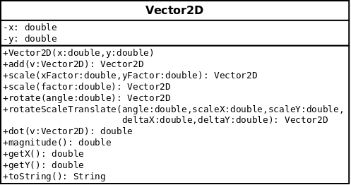

public class Vector2D extends java.lang.Object
Like a length (feet and inches), weight (pounds and ounces), time (hours and minutes), fraction (numerator and denominator), a complex number (real and imaginary parts), a 2D vector is a thing with two parts that can be added.
| Constructor and Description |
|---|
Vector2D(double x,
double y)
A vector can represent a point.
|
| Modifier and Type | Method and Description |
|---|---|
Vector2D |
add(Vector2D v)
The addition of one vector to another
produces a third vector.
|
double |
dot(Vector2D v)
The dot product of this vector with another vector gives
us a number.
|
double |
getX()
Here's an accessor method to allow a
read-only view of the vector's x component
from methods in other classes.
|
double |
getY()
Here's an accessor method to allow a
read-only view of the vector's y component
from methods in other classes.
|
double |
magnitude()
The magnitude of a vector is its length.
|
static void |
main(java.lang.String[] args)
More than one class in a program can have
a
main() method. |
Vector2D |
rotate(double angle)
If we think of a vector as an arrow rooted at the
origin, then we can imagine rotating it like the
hand on a clock.
|
Vector2D |
rotateScaleTranslate(double angle,
double scaleX,
double scaleY,
double deltaX,
double deltaY)
We will often want to rotate, scale, and translate (move)
a vector in that order.
|
Vector2D |
scale(double factor)
We will often want to stretch a vector the
same amount in the horizontal and vertical directions.
|
Vector2D |
scale(double xFactor,
double yFactor)
Multiplication of the components of a vector
stretches the vector.
|
java.lang.String |
toString()
Here's a way to produce a printable representation
of the vector.
|
public Vector2D(double x, double y)
x - is the x coordinate of the point.y - is the y coordinate of the point.public Vector2D add(Vector2D v)
The components of the sum are the sums of the corresponding components of the vectors we add.
$$ \begin{align*} \vec{u} & = (u_x, u_y ) \\ \vec{v} & = (v_x, v_y ) \\ \vec{u} + \vec{v} & = (u_x + v_x, u_y + v_y) \end{align*} $$v - is the vector to be added to this one.public Vector2D scale(double xFactor, double yFactor)
xFactor - is the amount of horizontal stretching.yFactor - is the amount of vertical stretching.public Vector2D scale(double factor)
If we think of a vector as an arrow, this operation produces a new vector that has the same (or opposite when the scale factor is negative) direction as the original but a different length.
factor - is the amount of stretching.public Vector2D rotate(double angle)
angle - is the amount of rotation.public Vector2D rotateScaleTranslate(double angle, double scaleX, double scaleY, double deltaX, double deltaY)
angle - is the amount of rotation.scaleX - is the amount of horizontal stretching.scaleY - is the amount of vertical stretching.deltaX - is the distance moved in the horizontal direction.deltaY - is the distance moved in the vertical direction.public double dot(Vector2D v)
This number is the length of the one vector's projection on the other (the length of its shadow).
v - is the other vector in the dot product with this vector.public double magnitude()
The magnitude is also the square root of the dot product of the vector with itself. This is just the same rule we use to find the length of the hypotenuse of a triangle.
public double getX()
public double getY()
public java.lang.String toString()
toString in class java.lang.Objectpublic static void main(java.lang.String[] args)
main() method.
main() methods are a convenient
place to put code that tests the constructors
and methods of a class.
args - is an array that we do not use
but must include in every main() method.